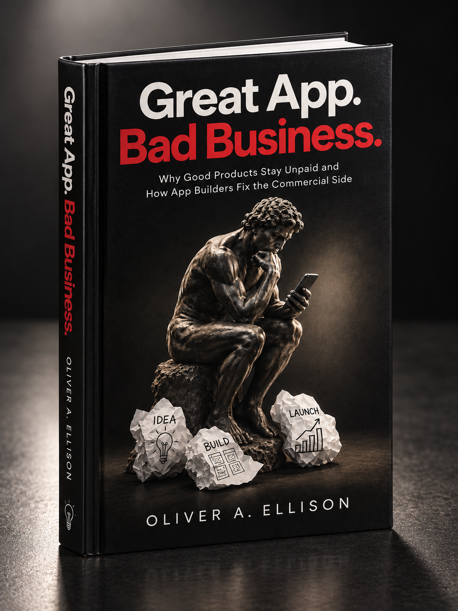

The Product Isn't the Business
Shipping is the starting line. Usage is not payment. A feature request is not demand. Find where the money is breaking before you build again.

Book
Why Good Products Stay Unpaid and How App Builders Fix the Commercial Side
Oliver A. Ellison · Kindle and paperback · ISBN 9798171849252
You built something real. The app works. That does not mean the business works.
App builders, technical founders, indie hackers, SaaS founders, AI-assisted builders, and developers who have shipped or nearly shipped something real, with weak or uncertain revenue.
AI made software dramatically easier to build. It did not make people care, trust, buy, pay, or stay. The work is finding where the path to payment is breaking, not adding another feature to a product nobody has a reason to purchase.
Shipping is the starting line. Usage is not payment. A feature request is not demand. Find where the money is breaking before you build again.
Persona is not demand. Pain is not enough. "I'd use this" is not a purchase. The market gets a vote, including whether you can reach the buyer.
The app is not the offer. Price is a hypothesis. Trust is a separate constraint. Create a purchase moment instead of hoping interest turns into a decision.
Distribution is not posting. Follow the trust path. Pick the next conversation worth an hour, then write a first-customer path a buyer can actually walk.
An objection is data. Ask why this person paid. If they pay but do not stay, that is a different failure than never getting paid at all.
Worksheets, a 30-day plan, and a diagnostic you can run on your own product. Do not automate a guess.
The Shipped-to-Paid Field Guide is the working version of the book's Practical Tools: worksheets plus a short intake that produces a Commercial Frontier Report. Use the tools in the browser, print them, or save the report as a file. You do not need to buy the book.
Get a Commercial Frontier Report Open the worksheets
Make it RAIN applies some of the same commercial questions in software. The book and the Field Guide stand on their own.